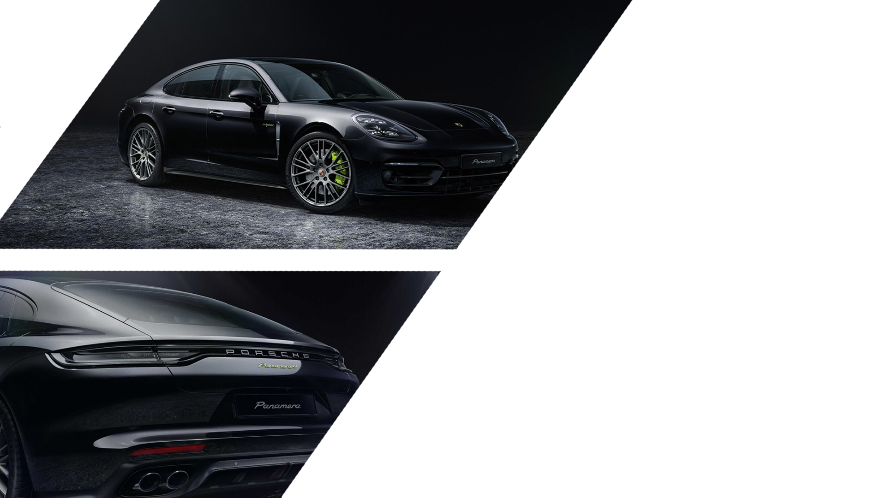

Cand a fost lansata in 2019, prima masina sport electrica Porsche
a determinat oamenii sa se regandeasca cum arata o masina
electrica. Numarul tot mai mare de oameni care se gandesc
sa treaca la vehicule electrice si care cauta o solutie
premium de lux nu ar mai trebui sa faca compromisuri
atunci cand isi cumpara noua masina. In scurtul
interval de timp de la lansare, si-a extins gama
de modele pentru a include versiuni cu un
accent si mai mare pe adecvarea de zi
cu zi si o capacitate mai mare pentru
drumuri de proasta calitate. Iata ce
face ca Taycan sa iasa in
evidenta.
